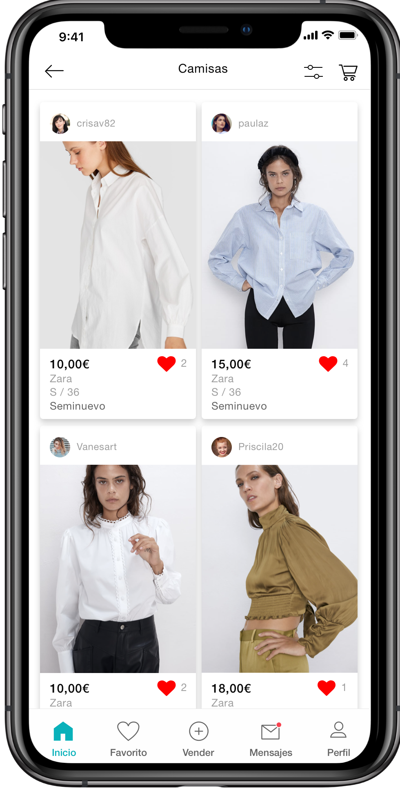
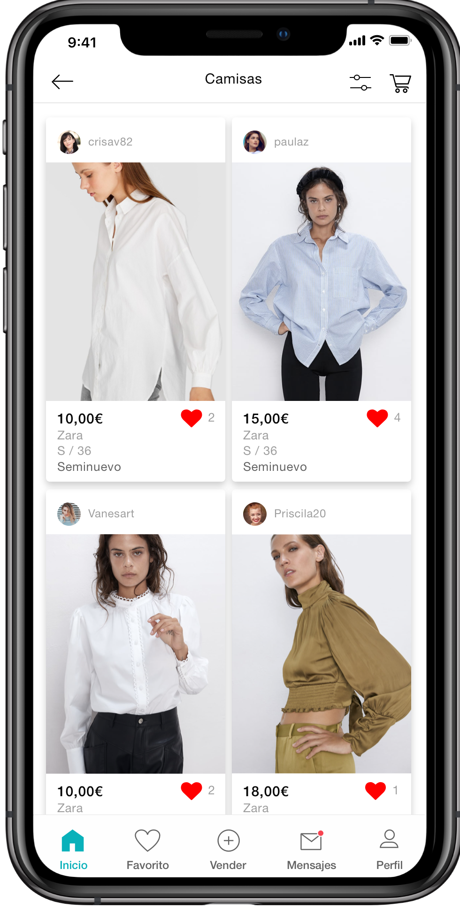

Soy diseñadora de UX/UI residente
en Madrid
Diseño UX
Una Mentalidad centrada en el usuario, analizar la competencia y hacer un research a fondo.
Este
marco general describe mi proceso de desarrollo de experiencias digitales:
- 1. RESEARCH
- 2. ESTRUCTURA de la configuración y el contenido del proyecto
- 3. CONCEPTO Y ESTRATEGIA
- 4. CREO, evaluo e itero entregas como:
- User personas
- Site maps
- Use cases and scenarios
- User flow
- Sketches
- Wireframes
Diseño UI
La parte atractiva del diseño:
- Diseño de prototipo (cómo responde el sistema)
- Guías de interacción (estados del sistema)
- Diseño de elementos (botones, formularios)
- Diseño visual (iconos, imágenes)
- Guías de estilo (paletas de color, fonts)


 
